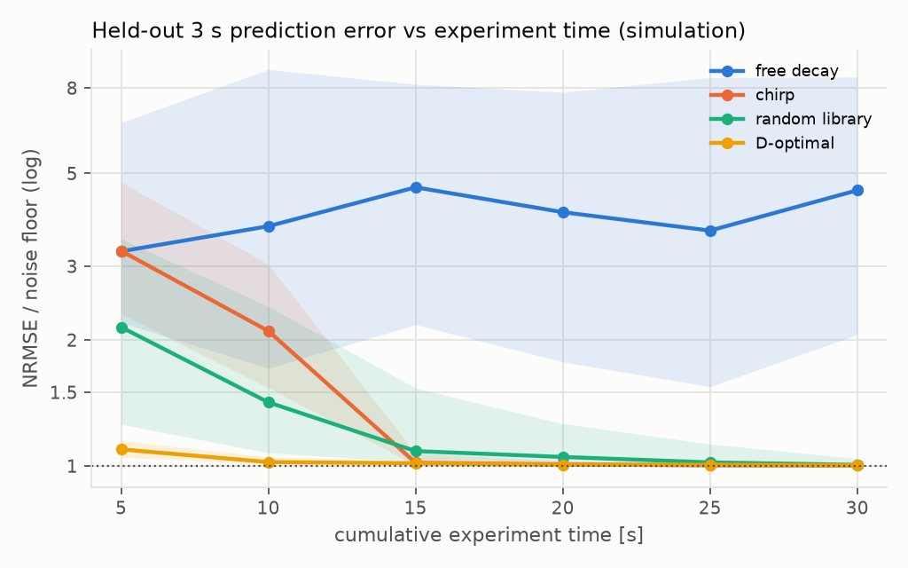

Pendulum Active Lab
This rig runs its own physics experiments. A webcam watches a pendulum hanging from a servo-driven arm. The system then:
- estimates the pendulum's state despite camera latency;
- chooses which excitation to apply next, so that it identifies the system's physics in the least experiment time;
- uses the identified model for feedback control of the swing amplitude.
Each claim is checked against an independent reference, and the gap between simulation and reality is measured, not assumed.
Status (2026-09-29): hardware experiments complete. Latest hardware results are in docs/results/e5_hardware.md; the full history is in docs/engineering_log.md.
- Closed-loop amplitude control on hardware: R-C1 met on 19/19 trials at 15°, 25° and 35°, with one frozen configuration (95% CI 82–100%).
- The swing enters and stays within ±2° of the target in 4–12 s.
- The camera sees the swing about 150 ms late (a Sony α7 IV over USB), and the controller compensates.
- Identification on hardware: 26° and 36° chirps fitted jointly. κ = 4.610 ± 0.002 m⁻¹, so the small-swing period is 0.934 s; an independent light gate measures 0.933 s.
- H2 on hardware, supported: modelling the servo and compensating the latency cuts the amplitude error by 95% (0.57° against 12.0°, 7 interleaved pairs, p = 0.016). Without it the controller never reached a target.
- H1 on hardware, not supported as pre-registered: self-chosen (D-optimal) experiments reached near-best held-out prediction in a median of 10 s, against 15 s for a chirp. They were faster in 5 of 6 pairs, but the target was 2×.
- H3, not supported: viscous and quadratic damping are indistinguishable (16 runs, p = 0.43).
- Sensor validation: the camera and an independent light gate agree on the swing period within 0.1% (R-S4). The static-angle test failed against a hand-held reference (R-S3, 1.42°).
- Full technical report: docs/report.md.
- Camera latency go/no-go (R-S5): fails as measured (median 151–164 ms against 150 ms). Reported, not moved; the control results above were obtained anyway.
- Simulation:
- E2: D-optimal design reaches within 10% of the noise floor in a median of 5 s, against 15 s for a chirp.
- The v1.0 wording of H1 and R-I1 is not supported. These criteria were revised in requirements v1.1, and the revision is labelled as post hoc.
- H2 (servo/latency model) is supported in simulation.
- 89 tests. Requirements, hypotheses and the go/no-go gate: docs/requirements.md.


Architecture
Laptop (Python) ───────────────────────────────────────────────────────────┐
MarkerSensor ─► EKF + latency ─► Controller ─► Actuator │
(webcam + compensation (energy / (serial → board → servo) │
perception) │ damping) │
▼ │
Identification (grey-box fit, posterior, damping-law selection) │
▼ │
Experiment designer (Bayesian D-optimal, safety-constrained) │
RunLogger: every signal + config + seed + git SHA │
SimWorld implements the same Clock / Actuator / MarkerSensor protocols ───┘
src/pal/interfaces.py defines the hardware abstraction. The simulator (pal.sim.world.SimWorld) and the physical rig implement the same protocols, so estimation, design and control code runs unchanged on both.
Model
These equations are summarised from the module docstring of src/pal/sim/dynamics.py.
Pendulum:
theta_ddot = -kappa((g + a_y) sin theta + a_x cos theta)
- beta theta_dot - mu tanh(theta_dot/eps) - eta theta_dot |theta_dot|
- (a_x, a_y) is the acceleration of the pivot at the tip of the servo arm.
- kappa = 1/L_eq.
Servo: a second-order position loop with rate limit, acceleration limit and dead time.
Quickstart
python -m venv .venv
.venv/Scripts/python -m pip install -e ".[dev,fast,analysis,hw]" # Windows; .venv/bin/python elsewhere
.venv/Scripts/python -m pytest # all tests, no hardware needed
.venv/Scripts/python experiments/run_sim.py --excitation chirp --duration 30
Runs are written to runs/<timestamp>_<name>/. Each contains meta.json (config, seed, commit, dirty flag), one CSV per stream, and events.jsonl. Load a run with pal.logging.load_run(path).
Running the experiments
Simulation (no hardware):
| Command | What it does |
|---|---|
python experiments/e2_sim_campaign.py --seeds 20 --workers 10 |
E2: free decay / chirp / random / D-optimal on 3 parameter sets, with a fit after every 5 s segment. Writes results.csv and summary.txt (≈ 12 min on 10 cores). |
python experiments/e5_control.py --seeds 5 --workers 10 |
E5 in simulation: 4 controllers × 15/25/35° targets, including the H2 ablation. |
python analysis/stats.py runs/<stamp>_e2_sim_campaign |
Re-summarise a campaign (H1, R-I1, R-I2, R-I3). |
python analysis/figures.py |
Regenerate the report figures from the latest E2/E5 runs into docs/figures/. |
Hardware, in this order. Every script also runs with --fake, against a simulated rig (a fake board, rendered camera frames, a simulated pendulum):
- Flash
firmware/rig(seefirmware/README.md) and set the COM port inconfigs/rig.yaml. python experiments/e0_camera.py --duration 60: frame rate, exposure and marker detection (R-S1, R-S2). Tune the HSV boxes inrig.yamlfrom the saved frames.python experiments/calibrate_rig.py --rest-wait 35 --write: servo axis, image scale, camera roll and servo trim, written toconfigs/rig_calibration.yaml. It also stores the servo's power-up home on the board.python experiments/e1c_latency.py --toggles 200: latency (go/no-go) and clock offset (R-S6). Put the printedcapture_latencyintorig.yaml.python experiments/e3_identify.py [--also runs/<earlier e3>]: chirp identification on the rig; writesparams.yaml.python experiments/e1a_static_angle.py(R-S3, protractor). Thenpython experiments/check_gate.py --params <params.yaml> --writefollowed bypython experiments/e1b_period.py --pump <params.yaml>(R-S4, light gate, hands-free).python experiments/e5_control.py --hardware --params <params.yaml> --repeats 3(R-C1, R-C2; add--controllers energy_identified energy_naivefor H2).python analysis/hw_results.py: rebuildsdocs/results/and the hardware figure from all runs.
Every session: python experiments/check_calibration.py first; recalibrate only if it fails. The camera may have moved or re-zoomed. See the session routine in docs/test_plan.md.
Repository layout
| Path | Contents |
|---|---|
src/pal/sim/ |
Dynamics, plant (command history, dead time), camera model, SimWorld |
src/pal/identification/ |
Records, batched simulation (numba/NumPy), windowed fit with priors, held-out NRMSE |
src/pal/design/ |
Excitation library, Bayesian D-optimal selection, safety constraints, sessions |
src/pal/estimation/, src/pal/control/ |
EKF with delayed frames; energy-shaping and PID amplitude control; closed-loop runner with the safety stop |
src/pal/perception/ |
Marker detection, angles from markers, calibration |
src/pal/hw/ |
Serial link with clock sync, servo mapping, camera thread, HardwareRig, fakes |
src/pal/validation.py, src/pal/stats.py |
Analysis for E1a–E1c and E5; bootstrap CIs and Wilcoxon tests |
analysis/ |
Summaries and figures regenerated from runs/ (R-R2); hw_results.py builds the hardware report |
docs/results/ |
Committed hardware results (generated; runs/ itself is not committed) |
src/pal/logging/ |
Run logger and loader |
src/pal/excitation.py |
Excitation signals (sine, chirp, multisine, hold) |
configs/ |
Simulator and hardware parameters |
experiments/ |
Runnable experiment scripts |
tests/ |
Physics, identification, design, serial, camera, estimation and control tests |
firmware/ |
Rig firmware (protocol v1) and the servo test sketch |
docs/ |
Requirements, test plan, engineering log |
docs/hardware_setup.md |
Replication guide: parts, servo basics, mechanical build, wiring, camera, acceptance checks |
docs/rig_setup.html |
Interactive 3D setup guide (Three.js): build steps, wiring, and the webcam's-eye framing check |